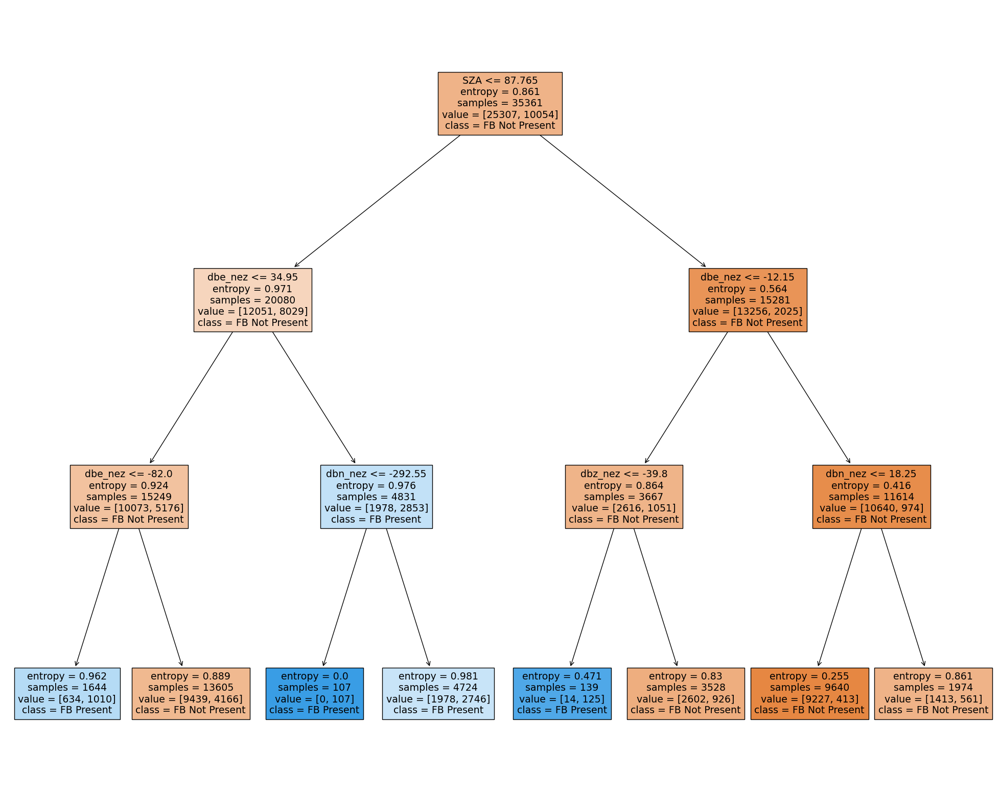
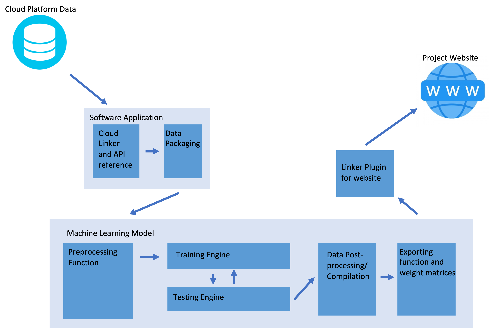
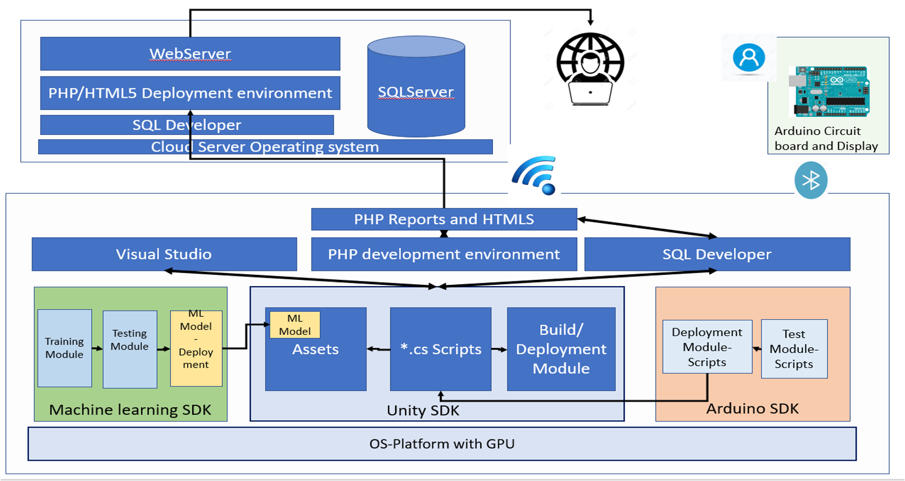

Hello
About Me
I am a computer science student at UCLA. I am passionate about Data Science and have experience in various programming languages such as Python, C/C++, and Bash. My goal is to create innovative solutions to complex problems and promote the use of cutting-edge technology like Machine Learning.
Projects
Analyzing and Classifying Farley Buneman Instability (FB)
- Ran Statistical Analysis with pandas on frequency and correlation between FB and Surface Magnetometer readings
- Used decision trees to translate observed multidimensional correlations into physical formulae
- Expanded analysis into seeing root causes for instability using unsupervised MeanShift clustering on ionospheric plasma data
- Developed Shell scripts to interpolate between different time granularities of OMNI and RISR datasets.
- Worked with PySpedas to run simulations on E region ionospheric behavior on relevant time slices.
- Technology: Python Scripting for Data Analysis using pandas, Bash scripts for interpolating and retrieving data, Python-based Random Forest Classifier


Surface Magnetic Assessment in Real Time (SMART)
Data Connection and Machine Learning based Predictive Analytics Model
- Using a multi-pronged Machine Learning model to predict relationships between magnetometer data. Polynomial Regressors and Support Vector Machines to estimate trajectories of incoming data
- Used decision trees to translate observed multidimensional correlations into physical formulae
- Interpolate multiple stations' data to use gravity model to predict magnetometer data over areas without stations
- Generate Cost Function to recursively tune parameters and train model to achieve higher accuracies with more data
- Develop Software Plugin to transport final outputs into website and recursively update model's outputs with new data from website
- Technology: Pytorch-Based Regressor, Python Scripting for Preprocessing Function, Bash Scripts for data retrieval and collation
Autism Diagnostic Tool using Gesture Recognition and Machine Learning
- Gross motor Skills analysis using Early Denver Model of Autism treatment
- Natural Environment Analysis vs Doctor's office using Home based device and Machine learning model
- Unlimited evaluation time and No wait time
- Universal Reach and Diagnostics using Cloud based reporting
- Technology: Random Forest Classifier on python, Kinect SDK, Arduino Scripting, Unity3D Engine C# Scripting

Resume
Education
2021-2025
University of California, Los Angeles
Bachelor's Degree in Computer Science
Relevant Coursework:
- Operating Systems
- Network Fundamentals
- Computer Architecture
- Algorithms
- Statistics and Probability
- Multivariate Calculus
Technical Skills and Applications
Machine Learning Frameworks:
TensorFlow, Pytorch, Keras
Scripting Languages:
Python, C/C++, Java, C#, MATLAB
Systems Development:
Kernel Programming, Bash/DOS, linux shell, socket
Data Management:
SQL, PHP, Tableau
Soft Skills:
Goal Oriented, Hardworking, Time-management
Published Research
“Developing a Data Analysis Tool to Predict Farley Buneman Instability using Magnetometer Data” (2023)
- Represented UCLA at NASA workshop during CGS UCAR (November 2023)
- Represented UCLA during CEDAR Conference for Atmospheric Science (June 2023)
“Development of Surface Magnetic Assessment in RealTime (SMART) Data Platform and KNN Predictive Analytics Model” (2022)
- Represented UCLA at AGU Conference for Space Science (December 2022)
“Optimizing the Training Process of a Machine Learning Model Using a Novel Mathematical Preprocessing Function” (2020)
- Presented at Technology Student Association (June 2021)
“Autism Diagnostic Tool Using Gesture Recognition and Machine Learning” (2019)
- Presented at ISEF Robotics Conference (May 2019)
Work Experience
Sept 2023 - Present
National Center for Atmospheric Research (NCAR) - Research Assistant
-
Developing Data Analysis tool for correlating different datasets in NASA OMNI library
- Wrote shell script on raspberry pi to collate real-time API requests from NASA OMNI
- Interpolated API data and fed into jupyter server.
-
Creating Random Forest Classifier for determining causation with Magnetometer Data
- Used pandas to manipulate incoming data and label data based on criterion.
- Used bootstrap aggregation to get plurality vote of decision trees to generate predictions.
-
Running Clustering algorithm for categorizing multiple types of instability
- Utilized scikit to test and develop various approaches before selecting Mean Shift algorithm.
- Implementing functions and generated specialized version of MeanShift to work with custom scales of variables.
- Working through UCLA to publish research in AGU academic journal
Jan 2023 - June 2023
UCLA Learning Assistant (LA) Program: Multivariate Calculus and Physics Lab
- Effectively explained Multivariate Calculus with pedagogical techniques
- Worked with Jupyter Notebook and Arduino UNO in teaching environment
- Reflected on teaching and learning through weekly submissions and discussing with other LAs
Apr 2022 - Sept 2023
National Science Foundation (NSF) Student Researcher
-
Developing data pipeline and long-term storage from magnetometer stations around US and centralized cloud server
- Wrote Shell scripts to store data in cloud buckets and cleanup/reformat data for analysis.
- Developing real-time connection with minimal latency using python-socket scripts.
- Working on phasing in older stations into data network.
-
Creating Machine Learning Predictive Analytics Model for Data Analysis
- Visualizing Data using matplotlib to find optimal variable groups.
- Developing preprocessing algorithm to clean up incoming data and prepare it for training engine.
-
Using 3 Machine Learning techniques to create regressors for predicting data.
- Support Vector Machines
- Polynomial Regressors
- Linear Regressors
-
Managing social media outreach and community engagement through YouTube and Twitter
- Help online outreach through lectures from professionals in geomagnetism and magneto-seismology - SMART Talks.
- Edited SMART Talks and Posting regularly on Twitter.
-
Assisting in making a Project Website to display data and project information
- Creating plugin to provide secure access to SMART GMAG data via website.
- Connecting website with social media and SMART Talks YouTube channel.
Honors and Awards
International Science and Engineering Fair (ISEF)
American Statistical Association Award (Phoenix, 2019)
International Science and Engineering Fair (ISEF)
International Council on Systems Engineering Award (Phoenix, 2019)
Technology Student Association (TSA)
National Championship in Software Development (Washington DC, 2019)Contact Me
I'm excited to hear from you!
Phone Number:
+1 (716) 507-7335